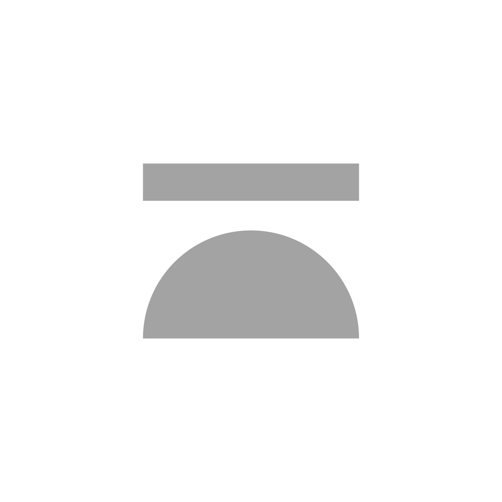

1.2 · Logomark — "Horizon"
A horizontal bar + a half-circle — a horizon line.
Inverse · on noir
Monochrome noir or blanc only — no fills, no effects.
Noir
#0B0B0C
Blanc
#F5F5F5

Argent
silver / printed only